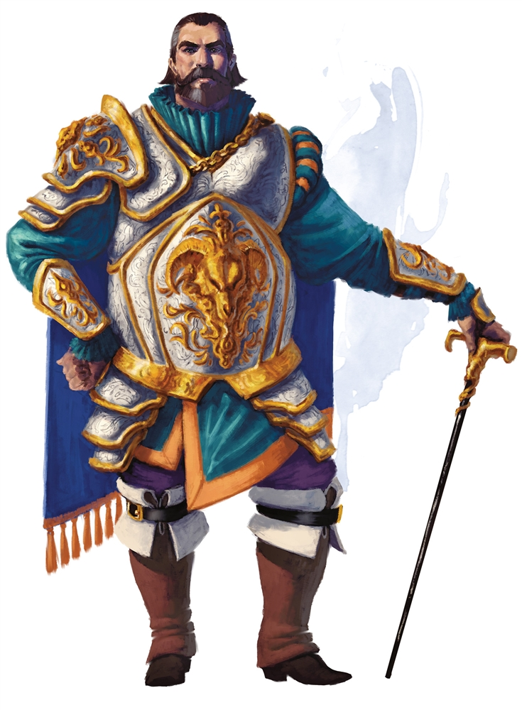

Playable Races > Human
The youngest sapient race in Dunia; versatile, ambitious and full of potential, but prone to irrationality and impulse. Unlike other races, they evolved naturally out of animals and so have no specific deity to call to. Humans are one of the most varied races in the world, coming in different shapes and of all possible alignments.
Talent: Free talent at level 1, extra +1 point in two chosen stats and +4 skill points during character creation.
Health: 1d7 health points per level.
Origin: See Hylonia, Korak, Southport and Miraldia for origins. Humans can also be nomadic.